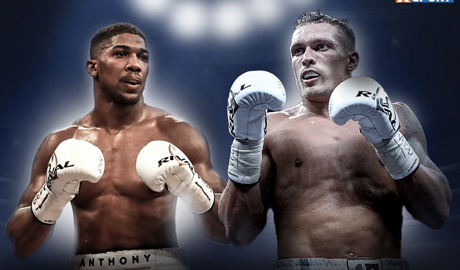
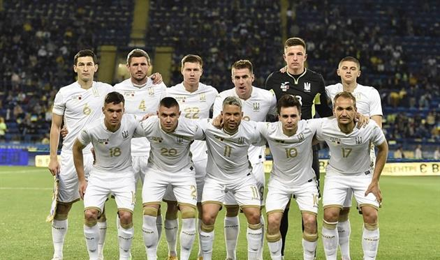
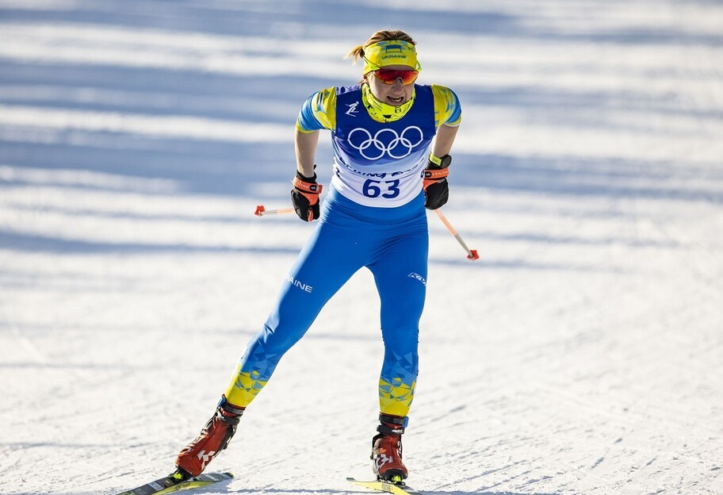
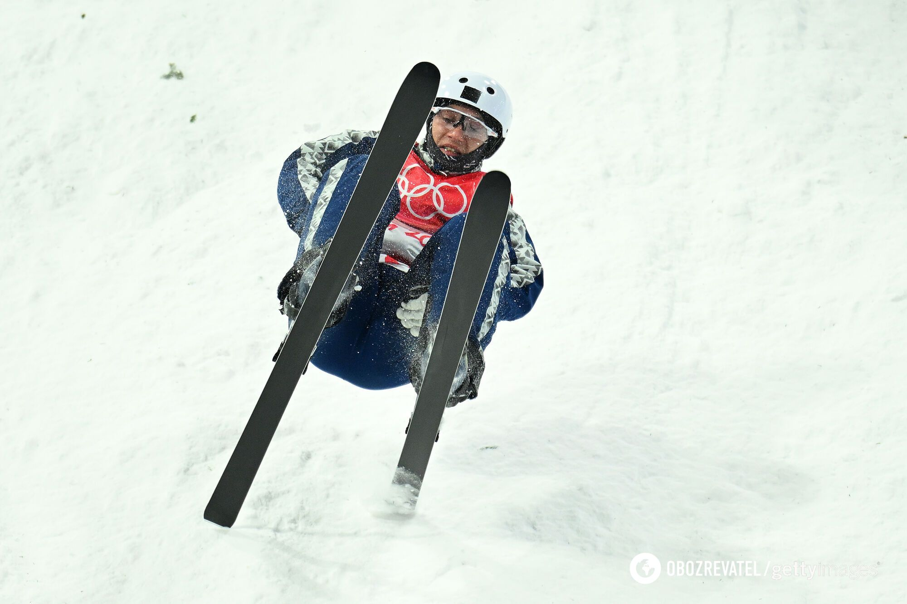
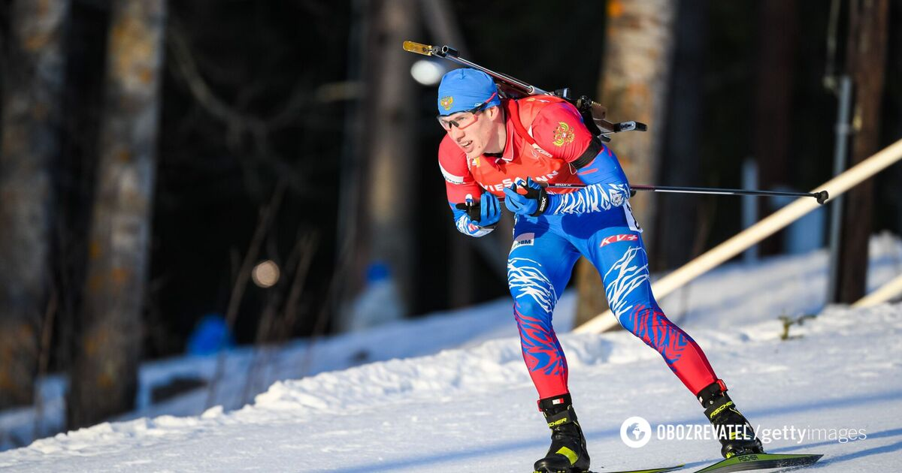

Реванш Усик – Джоуша на даху хмарочоса в Дубаї: неймовірний план промоутера
Організація реваншу між Олександром Усиком та Ентоні Джошуа йде повним ходом. Наразі промоутер британця Едді Гірн проводить низку зустрічей щодо місця проведення бою
Як ми вже писали, Росія зірвала реванш Усик – Джошуа в Україні , але наша країна не була головним претендентом. Сам Гірн раніше зізнавався, що хотів би знову провести бій у Великій Британії . Але готовий розглянути інші варіанти. Незважаючи на чудовий вигляд, навряд чи бій насправді пройде на вертолітному майданчику. Головна проблема – відсутність місця для глядачів, адже це головний фактор у виборі місця проведення бою.
ДжерелоУкраїна опустилася у рейтингу ФІФА
Міжнародна федерація футболу опублікувала перший рейтинг національних збірних 2022 року – українська команда втратила дві позиції
У рейтингу ФІФА, оприлюдненому 10 лютого, збірна України опустилася з 25-го рядка на 27-й. Це сталося внаслідок прогресу Японії та Марокко, котрі, порівняно з грудневим рейтингом, піднялися на три і чотири позиції відповідно і обійшли Україну У провідній трійці змін не відбулося – Бельгія, Бразилія, Франція. Нагадаємо, 24 березня у першому матчі плей-оф за вихід на ЧС-2022 Україна зіграє у Глазго із Шотландією, а у разі успіху 29 березня за потрапляння до фінальної частини світової першості зустрінеться на виїзді з переможцем пари Уельс – Австрія.
ДжерелоУкраїнка попалася на допінгу в Пекіні – її одразу усунули, а росіянка виступає далі
Українська лижниця Валентина Камінська попалась на вживанні допінгу на Олімпіаді-2022 у Пекіні. У її пробі знайшли одразу три заборонені препарати
Зразок було зібрано 10 лютого вже під час Олімпійських ігор у Пекіні, а результат став відомим 15 лютого. У допінг-пробі українки було знайдено заборонені речовини местеролон, метилгексанамін та гептамінол. Спортсменка була поінформована про позитивну пробу та усунена до вирішення питання відповідно до Всесвітнього антидопінгового кодексу та Антидопінгових правил МОК, йдеться на сайті Міжнародного агентства з тестування.
ДжерелоА яка в мене оцінка? Українець приголомшив після переможного стрибка у Пекіні
У вівторок з шикарним стрибком на 125 балів український фристайліст Олександр Окіпнюк виграв другу кваліфікацію та потрапив до фіналу Ігор-2022 у Пекіні – та водночас навіть не зрозумів, яку оцінку поставили йому судді
Зізнаюся, я так переживав, що навіть не побачив після стрибка свою оцінку", – сказав у коментарі "Сьогодні" Олександр Окіпнюк після своєї спроби. Зазначимо, що у фіналі чоловічої акробатики у фристайлі в середу, о 13:00 за Києвом, Окіпнюк виступить у компанії ще одного українця – Олександра Абраменка. Але якщо олімпійський чемпіон Пхенчхана-2018 потрапив до 12 фіналістів з першої спроби, то Окіпнюк – з другої.
ДжерелоОдним абзацом. Досить брехати, путінські шавки
Представники України на Олімпіаді-2022 не вітали синьо-жовтими прапорами Едуарда Латипова
Російське видання "Спорт-Експрес" розігнало з Пекіна-2022 сумний пасквіль. Намагаючись переключити увагу від дитини, яку в Росії нафарширували допінгом заради золотої медалі, автор цієї брехні написав, що українські журналісти розмахували синьо-жовтими прапорами під час фінішу якогось біатлоніста Едуарда Латипова. Якогось, бо ця особа на Олімпіаді виступає без прапора, без гімну, без назви країни. За допінгові гріхи. Щоб розвіяти брехню "СЕ", відповідально заявляю, на фініші були не лише журналісти із прапорами! Українські прапори на біатлонному стадіоні були лише на підтримку українських спортсменів. Ми пишаємося тим, що нашій країні можна виступати на Олімпійських іграх під синьо-жовтими прапорами. На відміну від країни, яку представляє "СЕ". Тож, колеги, досить видавати бажане за дійсне! Хоча, які ви колеги. Так, пропагандистські шавки Путіна...
Джерело